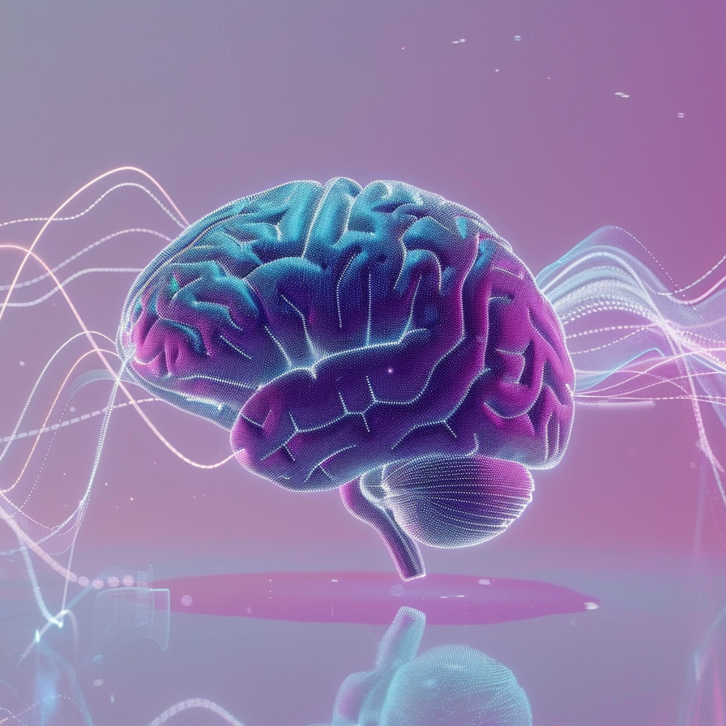

Hearts in Orbit is a youth-led initiative exploring how music can support
mental wellness in the most extreme environments—from outer space to
underserved communities on Earth.
Through research and design, we're developing customizable music-based tools
that enhance emotional well-being, focus, and rest in isolated or high-stress
conditions. Whether for astronauts on a Mars mission or children in hospitals,
we believe music can heal, connect, and uplift—across any distance.
Our Focus Areas
🎧 Music Therapy Tools
We design customizable sound-based interventions—like playlists, apps, and music boxes—that promote emotional balance and cognitive focus.

🧠 Neuroscience & Space Research
Our research investigates how music affects mood, stress, and mental clarity in isolated environments like Mars simulations and hospitals.
🌍 Global Impact & Outreach
We adapt our tools to support vulnerable groups on Earth—children in hospitals, seniors in care centers, and underserved communities worldwide.